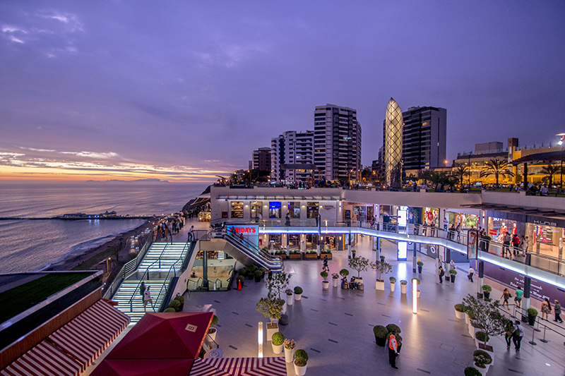

Tour Costa Verde

Parque Kennedy
Duraciónn: 15 minutos
Idioma: Inglés / Español
Este espacio verde miraflorino es conocido como “Parque Kennedy” a raíz de la colocación de un busto del
ex presidente estadounidense John F. Kennedy, asesinado en Dallas en 1963.
Pasearemos por el parque Kennedy, que es muy concurrido por vendedores y gatos.
Una vez terminemos el recorrido partiremos con dirección al "Parque Antonio Raymondi" donde se encuentra el faro
de la marina.

Parque el Faro
Duraciónn: 15 minutos
Idioma: Inglés / Español
En este sector está un faro en el centro y tiene varias áreas ajardinadas a los alrededores, practican yoga en la
mañana y en las noches se reunen grupos a ejercitarse por circuitos con instructores personalizados.
Parque del amor
Duraciónn: 20 minutos
Idioma: Inglés / Español
Uno de los parques más románticos de Lima en el distrito turístico de Miraflores.
Sin duda alguna me refiero al "Parque del Amor", aquel parque donde se encuentra el monumento "El Beso"
Cabe racalcar que National Geographic incluyó al Parque del Amor en Miraflores en su lista de los 50 destinos
más románticos del mundo.

Centro Comercial Larcomar
Duraciónn: 20 minutos
Idioma: Inglés / Español
Al final de la avenida Larco, en el distrito de Miraflores y con una bella vista al mar, se puede disfrutar del
gran Centro Comercial Larcomar.
Un lugar espléndido para pasar momentos muy bonitos con la vista al océano, y provisto de tiendas, restaurantes
y mucha diversión.
Playas de Barranco
Duraciónn: 6 minutos
Idioma: Inglés / Español
Circuito de Playas Costa Verde de Lima es la única capital de Sudamérica con acceso al mar y la Costa Verde es el más importante circuito de playas
de Lima y Perú. Tiene una extensión de 6 kilómetros, y el recorrido pasa por los distritos de Chorrillos, Barranco, Miraflores, San Isidro, Magdalena
y San Miguel.
Tales como:
Las Piedritas
Los Pavos
Las Cascadas
Barranquito
Los Yuyos
Las Sombrillas
Playas de Chorrillos
Duraciónn: 6 minutos
Idioma: Inglés / Español
Tales como:
Agua Dulce
Los Pescadores
Regatas
La playa emblemática de visita obligatoria es Agua Dulce, en temporada de verano alberga a más 20,000 visitantes, cuenta con los servicios que requiere el
visitante, con lava pies, además del malecón dotado de farolas y jardineras que permiten un confortable paseo y también contramos con otras playas. Una vez
haber pasado por todo este circuito de playas, pasaremos a dirigirnos al "Salto del Fraile".

Salto del fraile
Duraciónn: 30 minutos
Idioma: Inglés / Español
Lugar muy concurrido para trasladar nuestra imaginación a los años 1860, donde se cuenta la historia de un amor prohibido y dando nacimiento a la
leyenda del salto del fraile. Pescadores de la caleta de chorrillos vestidos de fraile representan el hecho lanzándose del peñasco al mar ante la
atenta mirada de decenas de visitantes, turistas y lugareños que aplauden su acción y le dejan propinas.

Piedra de Taulichusco
Duraciónn: 15 minutos
Idioma: Inglés / Español
Ubicado: Paisaje de Santa Rosa al costado de la municipalidad de Lima.
Es una hermosa piedra de color negro, una piedra ceremonial andina de 14 toneladas recogida en la pampa de Amancaes.

Galeria Pancho Fierro
Duraciónn: 15 minutos
Idioma: Inglés / Español
Ubicado: Pasaje Santa Rosa 114, Plaza de Armas - Cercado de Lima
Es una sala no comercial de exposiciones que cuenta con un espacio de 294.62 metros cuadrados destinados a exhibición de arte.

Museo de Sitio Bodega y Cuadra
Duraciónn: 20 minutos
Idioma: Inglés / Español
Ubicado: Jirón Ancash 213 - Cercado de Lima
Permite conocer el modo de vida de la sociedad limeña durante las épocas virreinal y republicana.

Sala Prehispánica Jaime del Castillo
Duraciónn: 20 minutos
Idioma: Inglés / Español
Ubicado: Jirón Áncash 299 - Cercado de Lima
Se vienen mostrando piezas arqueológicas de seis culturas diferentes como Mochica, Nazca, Vicús, Lambayeque, Chimú y Chancay
en la nueva Sala Prehispánica Jaime Del Catillo, en la Casa de las Trece Puertas.

Plazuela de San Francisco
Duraciónn: 6 minutos
Idioma: Inglés / Español
Ubicado: Jirón Ancash, Cercado de Lima, Perú
Considerado Patrimonio Cultural de la Humanidad y su uso público, que desde el año 1986 estaba controlado por los franciscanos.

Centro Cultural Bellas Artes
Duraciónn: 30 minutos
Idioma: Inglés / Español
Ubicado: Pasaje Santa Rosa 114, Plaza de Armas - Cercado de Lima
Escuela de Bellas Artes postula acervo fotográfico al registro patrimonial, actualmente se emplea como centro de exposiciones
y como aulas de enseñanza.

Plaza de Armas
Duraciónn: 15 minutos
Idioma: Inglés / Español
Ubicado: Pasaje Santa Rosa 114, Plaza de Armas - Cercado de Lima
La plaza Mayor de Lima o plaza de Armas de Lima es el sitio fundacional de la ciudad de Lima, capital del Perú. Es el principal espacio
público de la ciudad. Está ubicada en el centro histórico de Lima, a su alrededor se levantan sobriamente el Palacio de Gobierno del Perú, la Catedral
de Lima, la Iglesia del Sagrario, el Palacio Arzobispal de Lima, el Palacio Municipal de Lima y el Club de la Unión. La Municipalidad y la Catedral frente
a frente testimonian el sello del trazo hispánico.
Antes de partir con la movilidad, caminaremos un poco por los alrededores, para apreciar el Palacio de la República y la Catedral de Lima.
Nuestros guías se tomarán el tiempo para explicarles brevemente la historia y características de ambas estructuras.

Parque Universitario
Duraciónn: 15 minutos
Idioma: Inglés / Español
Es un parque ubicado en el centro histórico de la ciudad de Lima, capital del Perú. Es de forma rectangular y se encuentra en la intersección de las avenidas
Abancay y Nicolás de Piérola.
Desde la movilidad les daremos a conocer los sucesos detrás de la torre del reloj y todo sobre los cambios que tuvo que pasar el "Parque Universitario".
Posteriormente pasaremos por la Av.Frankling D.Roosevelt para ir en dirección de la Plaza Grau.

Paseo de los Héroes Navales
Duraciónn: 5 minutos
Idioma: Inglés / Español
Plaza ubicada en el distrito de Lima, en el centro de la capital del Perú, y que ocupa la primera cuadra del Paseo de la República. Le fue otorgado su nombre
actual el 8 de octubre de 1979 en conmemoración del centenario del combate de Angamos.
Cruzaremos este lugar explicando la razón detrás de su nombre.

Plaza Grau
Duración: 5 minutos
Idioma: Inglés / Español
Ubicada en el centro de la ciudad de Lima, capital del Perú. Se ubica en la intersección del Paseo de la República con el paseo Colón, la avenida Miguel Grau y
el Paseo de los Héroes Navales. Está nombrada en honor a Miguel Grau Seminario, comandante del monitor Huáscar durante la guerra del Pacífico.
Terminando, justo por esta recta notaremos la estatua de uno de los más representantes héroes navales en la historia del Perú.

Palacio de Justicia
Duración: 1 minutos
Idioma: Inglés / Español
Es la sede principal de la Corte Suprema de Justicia de la República del Perú y símbolo del Poder Judicial del Perú.
Se encuentra ubicado en el distrito de Lima es uno de los lados del Paseo de los Héroes Navales, en una de las plazas más grandes e importantes del Perú,
lugar donde se encuentra la sede de uno de los poderes del Estado.
Justo al frente de los anteriores lugares que cruzamos, visualizaremos el Palacio de Justicia, realizada durante el gobierno de Augusto Leguía.

Parque de la Exposición
Duración: 10 minutos
Idioma: Inglés / Español
Es un parque ubicado en el centro de Lima, la capital del Perú.
Fue inaugurado en 1872 y, actualmente, está delimitado por las avenidas Paseo Colón, Inca Garcilaso de la Vega, Paseo de la República y 28 de Julio, en el barrio de Santa Beatriz. Dentro de su extensión se encuentra el Museo de Arte de Lima (ubicado en el Palacio de la Exposición), el Museo Metropolitano de Lima, el Museo de Arte Italiano, el Centro de Estudios Histórico-Militares y la Escuela Nacional Superior de Arte Dramático.
El Parque de la Exposición fue declarado Patrimonio Cultural de la Nación el 5 de julio de 2006.
No podamos pasar por alto esta construcción que data del siglo XIX, cuya edificación fue ordenada por José Balta.

Estadio Nacional
Duración: 5 minutos
Idioma: Inglés / Español
Yendo con dirección al circuito de agua, pasaremos por el Estadio Nacional del Perú.
Que a sus inicios fue un estadio de tribunas de madera obsequiados por el gobierno británico.

Circuito Mágico del Agua
Duración: 41 minutos
Idioma: Inglés / Español
Para disipar nuestra mente, haremos una parada en este lugar para poder realizar un recorrido y disfrutar de una de las obras organizadas por el exalcalde Casta�eda Lossio.
Una vez concluido nuestro recorrido, retornaremos al punto de inicio (Plaza de Armas).